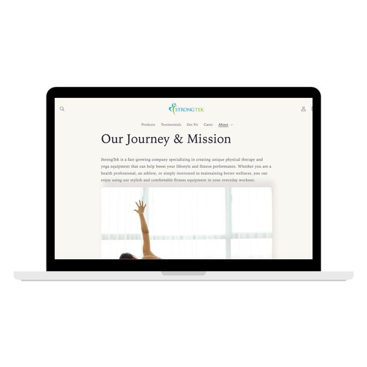

Brand storytelling and product copywriting for a physical therapy and yoga equipment company.

Marketing Copywriter, brought on in 2019
Blog content, brand storytelling, product copy across the StrongTek website
StrongTek is a physical therapy and yoga equipment company founded by two brothers looking to build higher-quality, more affordable recovery tools than what they'd found on the market. I was brought on as their marketing copywriter to help shape a consistent, approachable brand voice across the site — from the company's origin story to individual product pages.
My work included the "About Us" page, which introduces the founders and the company's mission, and blog-style product features like the Slant Board writeup, which walks customers through the benefits of calf stretching and how the product addresses common foot and ankle pain.
More detail on the process, goals, and results to come.